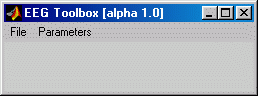
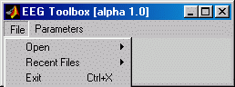
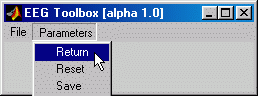
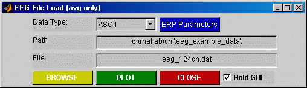
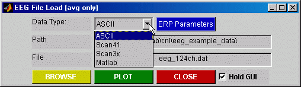
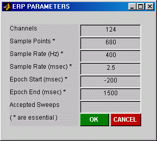
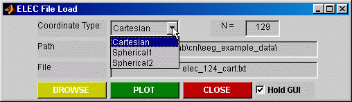
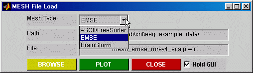

This document is an initial attempt to help new users get started with the toolbox. It is unlikely to cover all aspects of the toolbox, but it appears to be a reliable starting point on several installations to date. The toolbox provides some easy ways to visualize data. This document works entirely with the example data provided with the toolbox and finishes with some clear suggestions on the next steps to getting your data to work.
First download the archives for the eeg_toolbox and the mri_toolbox via http://eeg.sf.net. Also download the example data archives for each. Unpack the archives using tar or winzip or your favourite archive software. They can be "installed" into separate folders (directories) anywhere on your file system. Once all the archives are extracted, start matlab and 'cd' into the installation directory or add the full path of the installation folder(s) to your matlab path - see the addpath command. Then type 'eeg_toolbox'. If you have any trouble getting this far, please subscribe to the users email list via this easy subscription site: http://lists.sourceforge.net/lists/listinfo/eeg-users then post your email to eeg-users@lists.sourceforge.net and we can sort out the installation. Actually, it is a good idea to subscribe to this list anyway, because new releases and bugs are notified there.
There is a lot of documentation already in the help system, just type 'help eeg_toolbox' at the command prompt to see a full listing of functions in the toolbox. Similarly, 'help mri_toolbox'. If that fails, email eeg-users@lists.sourceforge.net.
The following GUI tour can be summarised, to some extent, in this
command line script:
p = eeg_toolbox_defaults
p = eeg_open(p)
p = elec_open(p)
p = mesh_open(p)
p = gui_erp_plot(p)
p = eeg_contours_engine(p)
So, this will open an ERP file, the associated electrodes and
realistic scalp mesh. It will then create GUI interfaces to explore the
ERP data, including a timeseries plot and a topographic map. You can see
how easy it is to use the toolbox, given the example data! At this point, you
can explore the interface on the ERP plot and topographic map. Now for the
GUI tour of how to get to this point...
Type 'eeg_toolbox' at the matlab prompt. It will initialise the default parameters and display the folling GUI:
This is the main access point to loading data. If this is the first time you've seen this, its best to reinitialise the default parameters using the Parameters -> Reset Defaults and then Parameters -> Save Defaults commands. If there are any problems at this stage, please email the errors to the eeg-users list. Assuming that works alright, lets now consider the 'file' menu:
From the file menu, open voltage, electrode, tesselations or mri data (see further details on these below). There is also an attempt to keep track of recent data structures. These can be created using Parameters -> Save As Data Workspace command.
The return command will return the toolbox data structure to the matlab workspace, although this structure is constantly updated in the workspace during operations in the toolbox. The default parameters can be used to explore the toolbox with the default data in 'eeg_example_data'. When you are familiar with the toolbox and can see some benefit from it, take a look at the 'eeg_toolbox_defaults.m' function and modify as necessary. This function initialises the data structure that is the key to everything. All functions in the toolbox pass and process the 'p' data structure. As matlab is smart at passing by reference or by value, as necessary, it shouldn't be too memory hungry, but there has been no conscientious effort to manage memory carefully. If you open too many datasets, especially ones with dense tesselations, it might get memory hungry.
To get started with looking at the example data, try File -> Open Voltage and leave all the defaults, click Plot and fill in the parameters with the values given below in the example figure (ERP PARAMETERS). Once this ERP plot is given, click the ELEC button and then return (or plot) in that GUI. That will load (and plot) the default electrode dataset. Then click on the MESH button and return to load the default mesh set. At this point, your ready to look at topographic maps. Select any time point of the ERP waveform by clicking on it and then hit the TOPO button. You should see a top view of the scalp topography. Click anywhere on the viewer and it will start to rotate with the mouse movements. Try the animation controls too (which allows saving of graphics and movies). That's the topography based on the electrodes only. Now close the topography window and go back to the ERP waveform plot. Click on the GUI checkbox below the TOPO button and then note the checkboxes near the bottom of the window - uncheck Elec Surface and check Mesh Surface. Then hit plot and wait - it will calculate a surface interpolation from the scalp electrodes to the scalp tesselation vertices and plot the realistic scalp topography. Yippee! If the MRI toolbox is installed, you can also open Analyze 7.5 data. If you get this far, your well on the way to using the toolbox on your data. Below is some more information about using the GUI interface. Play around with the ERP plot window, there are some nice interactive features for PRECISE measurement of data values. This GUI uses the same functions available in a general matlab function called crosshair (which has been downloaded thousands of times and used in all kinds of fascinating work around the globe ;-), see my matlab file exchange page). Place the mouse over various elements of the GUI and it will give popup help immediately.
Each of the file open GUIs appears very similar (as below). They each provide edit fields that contain the current file path and filename and facilities to browse for a file, plot the data and close the GUI. The 'Hold GUI' checkbox allows control of whether the GUI automatically closes after a plot command. Each of these GUIs returns the 'p' data structure to the main eeg_toolbox GUI and the matlab workspace. These GUIs call the eeg_open.m, elec_open.m and mesh_open.m functions, which control loading and plotting of the data. These functions can be called directly from the command prompt.
These GUIs provide access to various data types/formats.
For ERP timeseries, the ascii format should provide access to most data. The ascii file should contain only a matrix of potential values, no channel labels. The Neuroscan .avg format is well supported, and the matlab option provides access to binary files (via 'eeg_load.m').
The toolbox will attempt to arrange an EEG/ERP data matrix so that it has N rows of ERP sample points from M columns of electrodes (N>M is assumed). Many matlab functions assume that channels are given by column vectors (eg, the signal processing toolbox). One assumption made in the toolbox is that there are more ERP sample points than there are channels and it will try to arrange input data so that channels are column vectors.
An example of filtering an ERP waveform may be attained if you have the
signal processing toolbox. For example, the following implements a 50 Hz
lowpass filter:
lowpassHz = 50;
[b,a] = butter(15,lowpassHz/p.volt.sampleHz);
data = filtfilt(b,a,p.volt.data);
The ERP parameters button provides GUI access to defining essential epoch and sampling parameters:
These parameters will be read from Neuroscan .avg files, where possible, but must be entered for ascii data (although a first guess at electrodes and points is made from the size of the data matrix). If all essential parameters are not defined, this dialog box is opened during the plot command.
For electrodes, ascii data is supported and some other formats are available (scantri is from Neuroscan 3Dspace, Brainstorm and EMSE files are also there, either in the GUI already or at least via the command line). The ascii files can be Cartesian or spherical coordinates. See 'help elec_load' for more information on ascii data and 'help elec_open' in general. Also see the format of the default electrode file in the example data folder.
For meshes (tesselations), the toolbox can read ascii data in the FreeSurfer or EMSE formats and functions are available to read binary FreeSurfer files too. The toolbox can also read BrainStorm tesselations. See 'help mesh_open' for more information.
In the subfolder 'eeg_example_data', the file names are descriptive of the contents.
ERP data:
Electrode data:
See the description of file formats in help elec_open
Mesh data: